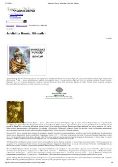

JRMavlono Rumiyning dono va ilhomli hikmatli so'zlari to'plami.
Bu kitob jahon adabiyotining ulug' siymosi Jaloliddin Rumiyning hikmatli so'zlari va she'riy parchalarini o'z ichiga oladi. Muslimbek Musallam tarjimasida taqdim etilgan ushbu hikmatlar sevgi, sabr, umid va ma'naviy kamolot mavzularini qamrab oladi. Alisher Navoiy va Abdurahmon Jomiy tomonidan ulug'langan Mavlononing merosi Sharq va G'arb adabiyotiga katta ta'sir ko'rsatgan.